| [1934: Manuscript 'Achter de Schermen' (AdsM1)] [AdsM1 vs. AdsT1] |
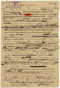
Toon schrijfproces per zin: aan
Naar boven]
Mijn dochter is getrouwd en heeft ons verlaten. Nog steeds zie ik mijn vrouw zooals zij naast mij stond toen Adele heenging om den man te volgen. Haar alledaagsch gezicht vertrok tot een masker dat lilde als onder de striemen van een zweep. | Een hoos heeft ons uiteengejaagd: dat meisje de baan van het moederschap op en ons beiden weer naar den ouden haard toe, waar dat smeulend leven moet voortgezet. Maar toen die jongen voor onze voeten gelegd werd, toen is mijn oude bedgenoot aan 't stralen
gegaan als had zij zelf weer gebaard. Haar sloffen werd opnieuw een getrippel en haar geklaag een hooglied. En ikzelf heb mij opgericht als om tot groote daden over te gaan. Voortaan is er voor ons geen winter meer.
Ik moet die geweldige beroering boekstaven, want voor mij is het misschien de laatste geweest, en | wel met spoed, vóór de eindelijke versuffing haren greep op mijn geest heeft gelegd. Immers ik loop naar de zestig en word stilaan drankzuchtig.
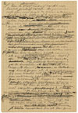
Toon schrijfproces per zin: aan
Naar boven]
Zooals telkens ben ik ook nu weer vast overtuigd dat dit mijn laatste geschrijf zal zijn. Het gaat immers niet aan, voor iemand die vrouw en kinderen | heeft, zich telkens af te zonderen om zijn binnenste en de leden van zijn gezin van uit een hoek te zitten bespieden, en ze een voor een onder het mes te nemen om uit hun bloed voor vreemden een filtraat
te bereiden. Mijn plicht gebiedt mij aan boord te blijven in plaats van af en toe te komen kijken of het schip nog drijft. En Moet ik na zoo'n geploeter niet telkens weer gluiperig in mijn huiskring plaats nemen| als een die niets ontheiligd, die niets op zijn geweten heeft?
Verduiveld, dat zou geen slecht begin zijn. Mijn poëtische bevliegingen zal ik voorstellen als het bereizen van een vreemd land, waarvan de lokstem mij komt tergen als ik vreedzaam bij onze kachel zit. Een land vol heerlijkheid dat mij toch geen voldoening geeft, zeker omdat er geen voldoening in mij te krijgen is. Ontevreden geleefd, ontevreden sterven. De verdiende straf voor een goddelooze hond.goddelooze
Ik kan de eerste zinnen nu wel neerzetten, dunkt mij. En ik begin:
Ik kom thuis van een reis en vind alles voor mij gereed staan. Vrouw en kinderen hebben gedaan alsof ik niet weg was geweest en mijn vrouw heeft
mijn souper opgediend. Punt. Ik herlees en ga aan 't huiveren voor die banaliteit. Zoo iets kan geen 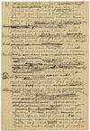
Toon schrijfproces per zin: aan
Naar boven]
mensch schelen, dat staat vast. Zooals zij daar staat is die reis een reis geweest naar Brussel of hoogstens naar Parijs, want Brussel is niet eens een reis van hier uit. Nauwelijks veertig kilometer. Maar zeker is het geen reis | naar dat heerlijke land. Ik kom thuis | van die reis, je weet wel, of beter nog van de reis. De reis bij uitnemendheid.
Maar waarom ben ik zoo plotseling op reis gegaan? Doe ik dat soms meer? Natuurlijk, daar zit hem de knoop. Eén reisje kan geen kwaad, wel dat stelselmatig trekken, alsof het een plicht was. Voor de zooveelste maal kom ik thuis van de reis. All right. O-Kee. Nu is dat geen reis naar Parijs meer, want wat zou ik daar voortdurend gaan uitvoeren? Nu is het een rare reis, een tocht naar een vreemdsoortig oord en voor den lezer durf ik hopen dat hij nu geen aardrijkskundig preciseeren meer verwacht.
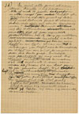
Toon schrijfproces per zin: aan
Naar boven]
En vind alles | gereed staan.
Hum. Die alles is erg overdreven. Alles roept geen enkel beeld op. Alles of niets is precies hetzelfde en alles roept geen beeld op. Wat staat er eigenlijk gereed of beter nog wat behoorde gereed te staan indien mijn gezin een sterke tegenpartij was. Dingen natuurlijk die mij | bij 't binnenkomen duidelijk maken dat zij geen oogenblik gevreesd of gehoopt hebben dat ik lang zou uitblijven. Een stoel is zeker geschikt. Verder een tafel en een bed, klaar om mij te ontvangen, de tafel voor de kauwpartij en 't bed om een eind te maken aan die heele grap. Eindelijk mijn pantoffels en nog wel bij 't vuur om mij nog eens duidelijk te maken dat dit de plaats is voor een man op jaren die een gezin op zijn geweten heeft. Wat heeft zoo'n asthmalijder van doen in gindsche land waar misschien | bordeelen zijn maar zeker geen behoorlijk vuur noch dito pantoffels. Dus: en weer staat mijn stoel gereed, tafel en bed gedekt, pantoffels bij 't vuur, alsof
ik iederen dag verwacht werd. Want zij hebben mij verwacht, de smeerlappen.
Vrouw en kinderen hebben gedaan alsof ik niet weg was geweest. Dat gedaan staat mij tegen. want Er zit een gemeene truc in. Het dient | om mij te verlossen van 't zoeken naar wat zij | gedaan hebben. Wat hebben zij gedaan? Zeggen kerel| als je kunt.
Laat ik mijzelf even afzonderen. Ik maak stilletjes de deur open en schuif binnen. Dan zeggen mijn kinderen, uit gewoonte, beleefd goeden dag, want ook een dolende hond van een vader blijft toch je vader. | 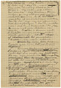
Toon schrijfproces per zin: aan
Naar boven]
| Dus hebben zij "dag vader" gezegd. Of beter nog "dag Pa"| want dag vader is wel erg theatraal. Op zoo'n "dag vader" zou alleen een somber "dag kinderen" kunnen volgen en nog wel met gefronste wenkbrauwen. En ik ben allerminst van plan op een melodrama aan te sturen. Zou ik die "dag" nog niet gauw even over boord flikkeren? Dus "Pa" instede van "dag Pa"?. Natuurlijk. Pa kan immers niet anders beteekenen dan "dag Pa". Pa alleen is trouwens veel huiselijker, inniger, vertrouwelijker, minder gedwongen. Iets als "schipper!" of als het gemoedelijke "bakker!" van iederen ochtend.
Mijn kinderen hebben heel gewoon Pa gezegd en mijn vrouw heeft mijn souper opgediend.
Bij nadere beschouwing steekt dat souper mij tegen. Als zoo'n recidivist in het dolen recht heeft op een souper, dan kan men onzen poedel óók laten soupeeren. Trouwens, al is het voorgezette in substantie werkelijk een souper, ook dan nog zou ikzelf bij zoo'n terugkomst weigeren te soupeeren. Ik kan hoogstens eten en daarmee uit. Maar ik weiger beslist tot echt soupeeren over te gaan. Wie zich schuldig voelt kan immers niet nalaten bovendien nog te manifesteeren. En een die betrapt wordt bij een verkrachting| kan voor 't zelfde geld gerust eens flink uitvloeken. Dat maakt de schanddaad niet erger. Het staat hem zelfs beter dan zoo'n schijnheilig gezicht.
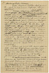
Toon schrijfproces per zin: aan
Naar boven]
Mijn kinderen hebben heel gewoon "Pa" gezegd en mijn vrouw heeft mijn eten opgediend.
Dat schijnt mij nog steeds niet geheel in den haak. Wordt een souper opgediend, met eten is dan niet het geval. Eten wordt gegeven, voorgezet of genomen. Maar op het eten zelf komt het minder op aan, want dat zoo'n thuiskomst eindigt met eten en naar bed gaan, dat spreekt toch vanzelf. En ik ben | op zoek naar dingen die niet van zelf spreken. Mij dunkt dat mijn vrouw iets zeggen moet, wat dan ook. Want als zij volkomen zweeg dan zou zij mij ook zeker niets opdienen noch mij iets voorzetten. Zij kon dus vragen "eet jij?" Of beter nog "eet jij soms?" want die soms beteekent dat zij aan een positief antwoord evenmin waarde hecht als aan een negatief.
Neen, zij moet iets anders | zeggen. Iets dat treft als een mokerslag. Iets waardoor ik pas recht tot het besef kom dat ik werkelijk thuis ben aangeland en niet in een of ander prieel van gindsche land.
Ik denk opeens aan de restanten waaruit onze soupers gewoonlijk bestaan en besluit er toe een paar specialiteiten te kiezen die de huiselijke sfeer sterk evokeeren. Iets waarvan de lucht het heele huis doordringt. 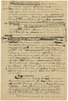
Toon schrijfproces per zin: aan
Naar boven]
Haring, bijvoorbeeld. Wel zeker, die haring is goed. Bovendien nationaal. Haring krijgt men in gindsche land niet en al kreeg men er haring, men zou het ruiken noch proeven, want de gewoonste dingen zijn er zoo heel anders. Zoodra iemand in haring weer haring proeft is hij reeds op den terugweg naar den haard.
Nu nog een tweede gerecht, om een keus mogelijk en de vraag logisch te maken, liefst iets dat niet ruikt maar walgt. Nieren? Maar als die klein zijn en met sluwheid klaargemaakt, dan merk je 't niet eens.
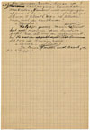
Toon schrijfproces per zin: aan
Naar boven]
Neen, geen nieren. Grooter, hooger op! Laat nog meer kandidaten aantreden. Niemand moet verlegen zijn| al zwemt hij in zijn vet of al druipt hij van 't bloed.
Wie is die bleeke daar, met zijn krulhaar?
- Hersens".
Walglijk genoeg. Maar de regisseur vind het ongewoon op een huiselijke tafel. Meer iets voor een restaurant.
En die dikke| die door zijn knieën zakt?
- Lever".
Ja lever is goed. Lever Van een oud beest, als die te krijgen is.
En meteen ligt een bruine massa voor mij, midden door gesneden, zoodat ik inzage krijg in die ingekankerde gaten die als zooveel oogholten zijn. Lever en nieren|? Maar dat is als een pleonasme, want zij komen uit denzelfden buik, waar zij buren waren. Neen, ik laat mijn haring niet los. Haring en lever. Of liever lever en haring, want die a-klank is beter voor de stembuiging bij 't laatste woord.
Met lever en haring is die vrouw tenminste gewapend. Zij kan mij nu de volle laag geven. Mijn kinderen hebben| heel gewoon Pa gezegd en mijn vrouw heeft gevraagd wat ik verkoos, lever of haring.
Wat kan nu iemand in 's hemelsnaam 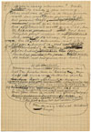
Toon schrijfproces per zin: aan
Naar boven]
op zoo'n vraag antwoorden?
Niets. Want die vraag is geen vraag. Wanneer men iemand bij zijn thuiskomst geen andere keus laat dan tusschen lever en haring, dan heeft dat quasi vragen slechts voor doel beide afschuwelijke
dingen nog eens helder bij hun naam te noemen opdat hij die aan 't eten gaat goed
zou weten wat hem te wachten staat. Hij kon nog wel eens met één voet in gindsche land staan en denken dat die lever geen lever is, maar een grap. To be hung by the neck | untill death follows. Goed zoo. Nog gauw even lekker walgen voor ook die portie lever tot het verleden behoort. Neen, een vraag is het niet. Het staat hooger. Als er vuil van de kat in de kamer gevonden wordt dan wordt ook haar gevraagd of zij dat gedaan heeft. En meteen wordt zij er ingewreven, zonder dat op eenig antwoord wordt gewacht.
Dus: Ik heb niet geantwoord. Toch dient hier misschien gezegd waarom ik gezwegen heb, want op die vraag, die geen vraag was, kon ik best antwoorden met iets dat geen antwoord is, met verrek of val dood bij voorbeeld. In 't leven plat en brutaal, zouden zij in dit litterair landschap zeker passen. Scheldt Othello die schat niet doodgewoon voor hoer?
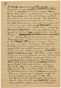 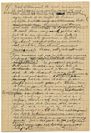
Toon schrijfproces per zin: aan
Naar boven]
Het stellen van dergelijke vragen stemt mij echter zoo verdrietig dat ik bang ben voor mijn eigen stem. Want klinkt die neerslachtig, dan jubelt de tegenstander. En klinkt zij valsch dan schaam ik mij dood. Ik heb dus niet geantwoord omdat ik niet kiezen kon tusschen een bedroefd maar oprecht antwoord |en een dat sist of snauwt maar mij onvoldaan zou laten zitten. Dus, omdat ik den moed niet had mijn eigen stem aan te hooren. |
Daarop heb ik een stuk van die lever genomen. Neen, geen lever meer, in Gods heiligen naam. Trouwens, waarom lever en geen haring. | Goed zoo. Haring dan. Maar wat dan met die lever| die mij nog steeds aankijkt met al die oogen. Neen zeg ik. Weg er mee. Ik heb jullie heel even noodig gehad als een bloedroode vlek in een grisaille, maar je krijgt mij niet te pakken. Vade retro, satanas. Good bye to both of you. En wel te rusten. Er stonden immers nog andere dingen op de tafel? Als mijn vrouw alleen die twee bij name genoemd heeft dan was het omdat alleen die
twee in staat waren mij te verdrieten. | Trouwens, weet een mensch wat hij in zoo'n stemming eet? Als hij een brok in de keel heeft dat bijna niets doorlaat zoodat alles éénzelfden grijzen smaak heeft?
Toon schrijfproces per zin: aan
Naar boven]
Niet alleen wil ik niet antwoorden, ik wil niet eens weten wat ik eet. Als dat kon zou ik zelfs niet willen weten dat ik überhaupt aan 't eten ben. En bovenal vrees ik door een keus op de tafel te laten blijken dat het thuiszijn volkomen tot mijn bewustzijn is doorgedrongen en mijn tevredenheid wegdraagt. Ik wil daar nog wat zitten als zat ik in een droom. Dus heb ik zoo maar iets genomen.
Ik heb | de hand uitgestoken naar wat het dichtst bij stond en zwijgend gesoupeerd.
Neen, alsjeblieft niet. Geen soupeeren op zoo'n plechtig oogenblik. Soupeert men na 't begraven van vrouw of kind? |
En zwijgend gegeten.
Ook niet. Spreekt van zelf. Als ik eenmaal zoover ben dat ik de hand naar iets heb uitgestoken, dan moet daar immers op volgen dat ik aan 't eten ga. | Hoeft dus niet gezegd. Welnu dan, ik heb zwijgend mijn maag gevuld.
| Het vullen van die maag bij wijze van souper| is een verdiende straf|. En die maag, ook al is het de mijne, herinnert mij nog heel even aan die lever die,
na zijn taak vervuld te hebben, reeds wegdoezelt in den achtergrond.
Dus: heb ik de hand uitgestoken naar wat het dichtst bij stond en zwijgend mijn maag gevuld. Zoo is het goed. En ter wille van de poëzie zal ik maar liefst verzwijgen dat het mij gesmaakt heeft.
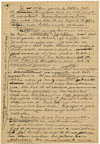
Toon schrijfproces per zin: aan
Naar boven]
Zij schijnen geweten te hebben dat ik terugkeeren zou en dat vind ik vervelend. Maar had ik mij boos gemaakt dan zou ik, om logisch te zijn, weer hebben moeten opstappen.
Alweer een gruwel, zooals het daar staat. Neen, Elsschot, Zij schijnen dat niet geweten te hebben, zij wisten het. Zij waren er zeker van. Zij waren er gerust in. | Dat dolen behoort tot je onschadelijke excentriciteiten, waar zij al jaren pret in hebben. Ik zit nog niet aan tafel of zij kaarten al door. Hun gerustheid, hun zekerheid dat ik ook ditmaal terugkeeren zou, heb ik vervelend gevonden.
Neen, niet vervelend, vriendlief. Dat woord zelf is hier zoo ongezouten dat het | vervelend is. Ik zou het misschien vervelend gevonden hebben indien zij een oogenblik hadden gedacht dat ik nooit meer terugkeeren zou, dus dat ik stapelgek geworden was. Maar hun gerustheid en hun zekerheid heeft mij beschaamd en diep gegriefd. Gegriefd of diep gegriefd? Gegriefd is altijd diep, maar ik laat dat diep toch staan| want dat leest beter|. Gegriefd is zoo'n woord waaraan een lettergreep schijnt te ontbreken.
Echt slap is dat boos. Ik kan mij boos maken als zij de kachel laten uitgaan, maar had ik gereageerd, wat ik niet gedaan heb, dan hadden zij wat te hooren gekregen. Een storm, mijnheer. Een geloei. Een gebulder. Dus: maar was ik aan 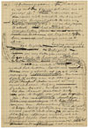
Toon schrijfproces per zin: aan
Naar boven]
't bulderen gegaan.
Nu, wat zou er op dat fameus gebulder zoo al gevolgd zijn? Stilte, natuurlijk en verder niets| want ik denk er niet aan mijn huisraad stuk te slaan. Ook niet aan ranselen, want mijn vrouw is mij te lief en die jongens te sterk.
Dan had er dus niets op overgeschoten, om logisch te zijn, dan met weerzin weer op te staan.
Dat logische hangt mij de keel uit. Onlogisch zou | nog beter zijn, want het logische is de haard, dus thuis blijven. Weg dus met die logika. Heraus. Dus: had er niets op overgeschoten dan met weerzin weer op te staan.
Ik zal nu maar in eens verklaren dat het trekken mij niet meer lokt. |
Volkomen eerlijk is dat anders niet, want het trekken lokt mij nog steeds, al gaat
die neiging diminuendo. Nu reeds denk ik echter aan mijn kleinzoon die aan 't slot de hoofdrol spelen moet en die mij moet opwekken tot een laatsten tocht. En hoe vaster ik bij den haard geankerd zit, des te treffender zal zijn ingrijpen zijn. Dus gerust doorliegen. 't Is hier ten slotte toch maar een schouwburg. En in dit geval is liegen heilige plicht, ter eere van dat kind, wiens pad ik reeds vanaf de eerste bladzijde effenen moet, ook al verschijnt hij pas heel achteraan, als het bouquet van een vuurwerk. Ik heb vroeger reeds gezegd dat men van 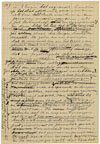 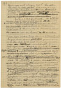
Toon schrijfproces per zin: aan
Naar boven]
in 't begin het oog moet houden op het slotakkoord, waarvan iets door 't heele verhaal geweven moet worden, als het leitmotief door een symphonie? En daar blijf ik bij tot ik iets beters vind!
Nu nog wat schmink, want zóó staat die leugen daar toch te naakt. Ik zal er dus | aan toevoegen: dat ik vermoeid ben en het licht van gindsche land niet meer verdragen kan. | | |
Maar dat zou zóó ongevraagd affirmatief zijn dat een psychologische opheldering niet zou kunnen uitblijven. Ik zie echter geen kans om een leugen door uitleg tot een waarheid om te werken.
Zou ik hier niet liever vragend vertellen, alsof ik zelf twijfelde? Ben ik vermoeid of kan ik het licht van gindsche land niet meer verdragen? Dat bevalt mij beter. Net of ik verdwaasd op het tooneel verschijn, de hand aan het voorhoofd, als een Hamletje. Wordt onder die opsmuk de leugen van dat trekken, dat mij niet meer zou lokken, nu nog door iemand ontdekt, dan stuit hij toch even later op die naïeve vraag| en heeft medelijden zoodat hij niet verder aandringt. | Zelf ben ik echter nog niet voldaan. Om twijfel verder uit te sluiten| zal ik er nog aan toevoegen dat ik voel dat van een volgenden tocht niets meer terecht komt. Voel is goed, want wat ik persoonlijk gevoel kan niemand controleeren. Dat gaat een ander niet aan. Ik voel dat ik naar zee moet| zegt die vrouw. En die arme jongen voelt dat hij in dat
Toon schrijfproces per zin: aan
Naar boven]
examen niet slagen zal. Ik voel in ieder geval dat van een volgenden tocht niets meer terecht komt.volgenden | "In ieder geval" maakt verdere discussie onmogelijk. | |
En zoo is het goed ook. Is het zoo niet waar| dan is het zoo toch goed. Als ik maar niet doende ben te veel te bewijzen. | Want mij rest nog maar net de tijd om eindelijk met vrouw en kinderen wat mee te leven, mij te koesteren aan de warmte van den haard en te werken voor onzen ouden dag die voor de deur staat.
Er zal toch zeker niemand gevonden worden die zich niet laat vermurwen door mijn nooddruft om voor onzen ouden dag | aan 't werk te gaan? | Niemand die | de erkenning blijft eischen van mijn nog steeds positief verlangen naar gindsche land, ook al zouden bij een volgenden tocht vrouw en kinderen verhongeren, ook al zou daardoor dat kleinkind in 't heele boek niets te doen krijgen? Men moet toch toegeven dat ik, zoo lang ik ginder dwaalde, mijn kinderen niet opgevoed maar van hen genoten heb, voor mijn vrouw niet gezorgd maar met haar gespeeld. Is dat geen doorslaand argument? En moet ook de lezer niet een beetje meegaand zijn? Plicht gaat toch immers boven waarheid? | Met mijn kinderen gespeeld en van mijn vrouw genoten is beter dan van mijn kinderen genoten en met mijn vrouw gespeeld. Om oprecht te kunnen spelen| moet minstens een van de partners jong zijn, dunkt mij. |
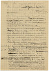
Toon schrijfproces per zin: aan
Naar boven]
Nu mijzelf stevig aan den haard gemetseld om van dat kind, dat mijn boeien breken moet, een bovenaardsche kracht te doen uitgaan. Hier bij 't vuur, in onze kooklucht, komt het er op aan mijn plicht te doen als een doodgewoon mannetje dat ik ten slotte ben. Dat doodgewoon mannetje is schijnheilig, want ik hoop van harte dat de besten onder mijn lezers op dat moment
verklaren zullen dat ik volstrekt niet zoo doodgewoon ben, maar een heele Piet. Stel je voor dat allen mij gelijk gaven.
Nog steeds heb ik een gevoel alsof ik pensum verdien omdat het definitief thuisblijven | niet voldoende gewettigd is, en ik nog steeds den indruk maak alsof ik daar moedwillig blijf zitten om met het optreden van dat kleinkind, dat gedaan
krijgt wat ik van mijzelf niet meer verkrijgen kon, mijn lezers te epateeren als de boeren op de kermis met een kind zonder hoofd. Ik zal de noodzakelijkheid om thuis te blijven dus nog maar wat aandikken| want ik kan | niet meer terug. Dit is mijn laatste kans| (heb je nu nóg geen medelijden, moedwillige lezer) want mijn kinderen groeien als kool. Een heeft al een 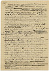
Toon schrijfproces per zin: aan
Naar boven]
snor en een ouwelijke trek om den mond. Is het nu duidelijk genoeg dat zij reeds in staat zijn om den kapitein desnoods aan den dijk te zetten, met of zonder pensioen, en zelf het roer in handen te nemen?
Als ik mij nu niet aanpas word ik uitgestooten door mijn eigen broed, want zij zien in mijn doolen een verraad en scharen zich zwijgend om hun moeder. Zie je dat dreigend gezelschap daar staan? Dat wijf, dat tóch al beklaagd wordt, ook al had zij géén dolenden vent, omringd door die stevige jongens? Een bende kannibalen| en ikzelf een gevangen zendeling. Stellen zij geen zwijgend ultimatum: "Ouwe, wat ben je nu van plan. Dolen of thuiszitten?"
En zij hebben gelijk. Zeker hebben zij gelijk. Hoe gedicideerder hun optreden, hoe vaster ik aan den haard zit en hoe heerlijker |mijn bevrijding door dat kind. Binden, ketenen moesten zij mij. Hij krijgt toch alles los, want dat is het doel van 't heele verhaal.
Zoo heb ik daar dan gezeten, in die kooklucht dus, omringd door dat zwijgend rot, tot ik op een heerlijken dag die schat van een kleinzoon in huis gewaar werd, die aan hun dwingelandij 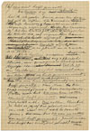 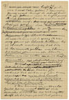
Toon schrijfproces per zin: aan
Naar boven]
een eind heeft gemaakt. Die heerlijke dag sluit in dat ik, als zuster Anna, naar dien dag zat uit te kijken. 't Is misschien sterker dat mijn bevrijding bewerkt wordt tegen mijn eigen wil. Hoe knusser ik bij den haard zat, met of zonder ketenen, des te magischer de kracht die mij nogmaals de
baan opjaagt. Heerlijk er dus uit, heilloos in de plaats en de zaak is in orde. Als ik heilloos accepteer | heeft ook die kleinzoon, die erg officieel klinkt, een qualificatie noodig van dezelfde kleur. Tot ik op een heilloozen dag dat mormel van een kleinzoon in huis gewaar werd. Wel een erg flink mormel, mais passons. Die aan hun dwingelandij een eind heeft gemaakt. Kom, kom. Die grap wordt flauw. Geen dwingelandij. Rotten was het. Die aan hun rotten een eind heeft gemaakt. Volstrekt niet. Ons rotten, Elsschot. Je hebt er jezelf toe geleend, vriend, om ook dat kind iets te doen te geven. Dus die aan ons rotten een eind heeft gemaakt. Jawel, maar hoe heeft dat kind hem dat gelapt? Hoe
Toon schrijfproces per zin: aan
Naar boven]
heeft hij zich voor 't eerst laten gelden? Eenvoudig genoeg| want terwijl ik schrijf hoor ik zijn gekraai onder de tafel zoodat ik mijn lompe voeten niet verzetten durf. Met zijn gekraai dus. En om bij dat geluid ook iets te zien te geven dat de moeite waard is voeg ik er nog gauw zijn bloote billen bij| in de vaste overtuiging dat die in den smaak zullen vallen. Die met zijn gekraai en zijn bloote billen aan ons rotten een eind heeft gemaakt.
Het slot volgt van zelf. Mijn boeien zijn verkoold tot asch en | wij zijn samen opgestapt naar dat land waar die gouden vogel jubelt, véél hooger dan de leeuwerik.
't Was trouwens een uittocht zonder risico, want onder al die menschen is er natuurlijk niet één die zich verzetten durft als die jongen zijn wil laat gelden. 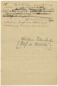
Toon schrijfproces per zin: aan
Naar boven]
Bij 't herlezen komt het mij voor....
Schei uit, man. Word je niet ijl in je hoofd? Zet dat kind in zijn stoel en laat die tekst met vrede, op hoop van zegen.
|
Willem Elsschot
[Alf. de Ridder]